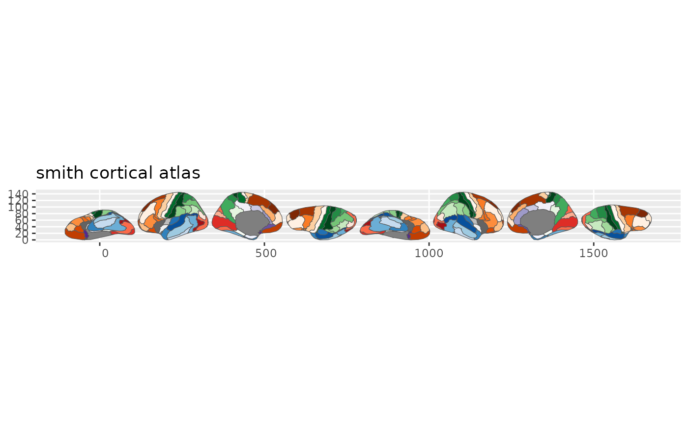

Brain atlas for the Smith 1907 cortical parcellation.
Contains both 2D polygon geometry for ggseg::geom_brain()
and 3D vertex indices for ggseg3d::ggseg3d().
Value
A ggseg.formats::ggseg_atlas object (cortical).
References
G.E. Smith; A new topographical survey of the human cerebral cortex, being an account of the distribution of the anatomically distinct cortical areas and their relationship to the cerebral sulci; J. Anat. Physiol., 41 (Pt 4) (1907), p. 237
Pijnenburg R, et al. (2021). Myelo- and cytoarchitectonic microstructural and functional human cortical atlases reconstructed in common MRI space. NeuroImage, 239, 118274. doi:10.1016/j.neuroimage.2021.118274
See also
Other ggseg_atlases:
brodmann(),
campbell(),
economo(),
flechsig(),
kleist()
Other cortical_atlases:
brodmann(),
campbell(),
economo(),
flechsig(),
kleist()
Other historical_atlases:
brodmann(),
campbell(),
economo(),
flechsig(),
kleist()
Examples
smith()
#>
#> ── smith ggseg atlas ───────────────────────────────────────────────────────────
#> Type: cortical
#> Regions: 44
#> Hemispheres: left, right
#> Views: inferior, lateral, medial, superior
#> Palette: ✔
#> Rendering: ✔ ggseg
#> ✔ ggseg3d (vertices)
#> ────────────────────────────────────────────────────────────────────────────────
#> # A tibble: 88 × 3
#> hemi region label
#> <chr> <chr> <chr>
#> 1 left callosA lh_callosA
#> 2 left callosB lh_callosB
#> 3 left callosC lh_callosC
#> 4 left callosD lh_callosD
#> 5 left froB lh_froB
#> 6 left froC lh_froC
#> 7 left froD lh_froD
#> 8 left froinf lh_froinf
#> 9 left froint lh_froint
#> 10 left frointB lh_frointB
#> 11 left froorb lh_froorb
#> 12 left froprefro lh_froprefro
#> 13 left frosup lh_frosup
#> 14 left frosupant lh_frosupant
#> 15 left insinf lh_insinf
#> 16 left inspostc lh_inspostc
#> 17 left insprec lh_insprec
#> 18 left occpar lh_occpar
#> 19 left occparastr lh_occparastr
#> 20 left occperistr lh_occperistr
#> 21 left occstr lh_occstr
#> 22 left occtemp lh_occtemp
#> 23 left paradent lh_paradent
#> 24 left paraspl lh_paraspl
#> 25 left parinfA lh_parinfA
#> 26 left parinfB lh_parinfB
#> 27 left parinfC lh_parinfC
#> 28 left vis-sen-bnd lh_vis-sen-bnd
#> 29 left parsupA lh_parsupA
#> 30 left parsupB lh_parsupB
#> 31 left postcentA lh_postcentA
#> 32 left postcentB lh_postcentB
#> 33 left precentA lh_precentA
#> 34 left precentB lh_precentB
#> 35 left pyriform lh_pyriform
#> 36 left tempinf lh_tempinf
#> 37 left tempmed lh_tempmed
#> 38 left temppara lh_temppara
#> 39 left temppole lh_temppole
#> 40 left tempsup lh_tempsup
#> 41 left froA lh_froA
#> 42 left tempHeschl lh_tempHeschl
#> 43 left vis-aud-bnd lh_vis-aud-bnd
#> 44 left parolfact lh_parolfact
#> 45 right callosA rh_callosA
#> 46 right callosB rh_callosB
#> 47 right callosC rh_callosC
#> 48 right callosD rh_callosD
#> 49 right froB rh_froB
#> 50 right froC rh_froC
#> 51 right froD rh_froD
#> 52 right froinf rh_froinf
#> 53 right froint rh_froint
#> 54 right frointB rh_frointB
#> 55 right froorb rh_froorb
#> 56 right froprefro rh_froprefro
#> 57 right frosup rh_frosup
#> 58 right frosupant rh_frosupant
#> 59 right insinf rh_insinf
#> 60 right inspostc rh_inspostc
#> 61 right insprec rh_insprec
#> 62 right occpar rh_occpar
#> 63 right occparastr rh_occparastr
#> 64 right occperistr rh_occperistr
#> 65 right occstr rh_occstr
#> 66 right occtemp rh_occtemp
#> 67 right paradent rh_paradent
#> 68 right paraspl rh_paraspl
#> 69 right parinfA rh_parinfA
#> 70 right parinfB rh_parinfB
#> 71 right parinfC rh_parinfC
#> 72 right vis-sen-bnd rh_vis-sen-bnd
#> 73 right parsupA rh_parsupA
#> 74 right parsupB rh_parsupB
#> 75 right postcentA rh_postcentA
#> 76 right postcentB rh_postcentB
#> 77 right precentA rh_precentA
#> 78 right precentB rh_precentB
#> 79 right pyriform rh_pyriform
#> 80 right tempinf rh_tempinf
#> 81 right tempmed rh_tempmed
#> 82 right temppara rh_temppara
#> 83 right temppole rh_temppole
#> 84 right tempsup rh_tempsup
#> 85 right froA rh_froA
#> 86 right tempHeschl rh_tempHeschl
#> 87 right vis-aud-bnd rh_vis-aud-bnd
#> 88 right parolfact rh_parolfact
plot(smith())
